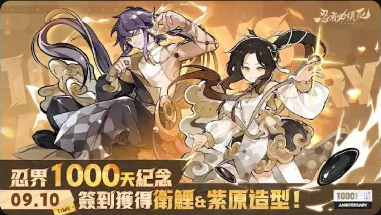

Live-ops event design for the global version, from a one-line request to a feature players actually see.

The request was one line: give players a free skin for the anniversary. The design question was how to give it so that it builds anticipation and becomes part of the anniversary, instead of ending the moment players log in.
Make players look forward to the skin before they get it.
Show global players the game is still cared for and actively run.
Carry the anniversary warm-up and daily activity, not just one reward.
A warm-up phase announced the skin and how to earn it; the main phase delivered it through daily check-ins. The skin stayed in players' minds across the whole anniversary rather than for a single login.
Outfits matching paid quality for two of the most popular characters, plus extra check-in rewards such as a limited weapon and gacha resources, so the event felt like the studio investing in the community.
I broke the goal down into rules, flow and UI wireframes, then followed art and code, set up the Unity prefabs and assets, and tested until the shipped event matched the design.
It feels generous, but the moment is over in a day. This event also had to warm up the anniversary and keep players coming back, so the skin needed to stay visible for the whole period.
Why would a player enter? The reward, content or novelty must be obvious.
Rules read fast, the flow is smooth, and repetition and time cost stay fair.
Did it do its job for the update: activity, content, rewards or atmosphere?
First find which number. Low entry points to visibility or reward pull; low completion to flow length or clarity; a fast drop after day one to repetition and long-term pull. Then change one variable and watch the same metric.
"7 days in total" is not "7 days in a row". "Once per day" can't lose "per day". "A chance to get" is not "get".
"Claim Rewards" overflowing a button, titles wrapping over timers, {0} and %s in the wrong order.
Same names across event UI, notices, mail and streams, and end times stated in the player's time zone.
I went from designing a plan to owning what actually reaches players: goals, flow, UI, data, testing and launch.